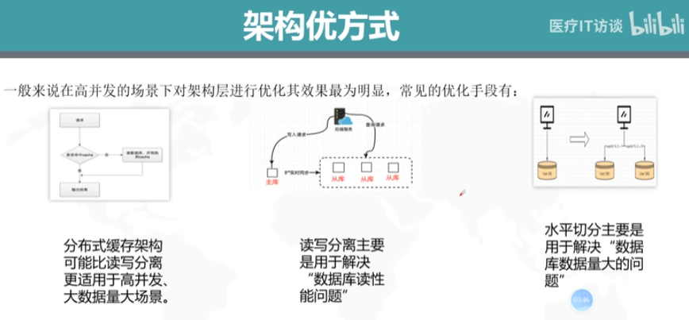
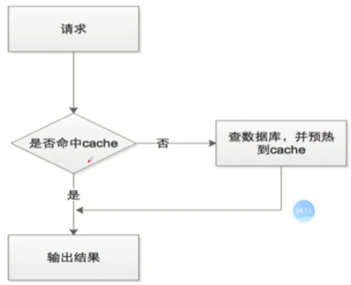

SQLserver优化
前言
数据库稳定性
很多数据库问题都是由于低效的查询引起的。随着时间的推移，系统变得极其臃肿数据库中的数据量越来越大，数据检索越来越困难，对整个系统带来的资源消耗也就越来越大，系统越发不稳定
优化用户体验
流畅页面访问速度，良好的网站功能体验数据库连接池已经满了或者查询的数据量比较大，引起数据库线程的挂死。
如何优化
数据库优化可以从架构优化，硬件优化，DB优化，SQL优化四个维度入手。此上而下，位置越靠前优化越明显，对数据库的性能提升越高。我们常说的SQL优化反而是对性能提高最小的优化。
架构优化
分布式缓存
当接收到查询请求后，我们先查询缓存，判断缓存中是否有数据，有数据就直接返回给应用，如若没有再查询数据库，并加载到缓存中，这样就大大减少了对数据库的访问次数，自然而然也提高了数据库性能。
不过需要注意的是，引入分布式缓存后系统需要考虑如何应对缓存穿透、缓存击穿和缓存雪崩的问题。
读写分离
一主多从读写分离，主动同步，是一种常见的数据库架构优化手段。
一般来说当你的应用是读多写少，数据库扛不住读压力的时候，采用读写分离，通过增加从库数量可以线性提升系统读性能。当准备实施读写分离时，为了保证高可用，需要实现故障的自动转移，主从架构会有潜在主从不一致性问题。
水平切分
也是一种常见的数据库架构优化手段。
当你的应用业务数据量很大，单库容量成为性能瓶颈后，采用水平切分，可以降低数据库单库容量，提升数据库写性能。
当准备实施水平切分时需要结合实际业务选取合理的分片键(sharding-key)
硬件优化
我们使用数据库，不管是读操作还是写操作，最终都是要访问磁盘，所以说磁盘的性能决定了数据库的性能。块PCIE固态硬盘的性能是普通机械硬盘的几十倍不止。这里我们可以从吞吐率、IOPS两个维度看一下机械硬盘普通固态硬盘、PCIE固态硬盘之间的性能指标。
吞吐率
:单位时间内读写的数据量
机械硬盘:约100MB/s200MB/s500MB/s
普通固态硬盘:
200MB/S
PCIE固态硬盘:900MB/s ~3GB/S
IOPS
:每秒I0操作的次数
机械硬盘:100~200
普通固态硬盘:
30000 ~50000
PCIE固态硬盘:数十万
DB优化
SQL执行慢有时候不一定完全是SQL问题，手动安装一台数据库而不做任何参数调整，再怎么优化SQL都无法让其性能最大化。要让一台数据库实例完全发挥其性能，首先我们就得先优化数据库的实例参数。
数据库实例参数优化遵循三句口诀:日志不能小、缓存足够大、连接要够用。
数据库事务提交后需要将事务对数据页的修改刷(fsync)到磁盘上，才能保证数据的持久性。这个刷盘，是一个随机写，性能较低，如果每次事务提交都要刷盘，会极大影响数据库的性能。数据库在架构设计中都会采用如下两个优化手法:
1、先将事务写到日志文件RedoLog(WAL)，将随机写优化成顺序写
2、加一层缓存结构Buffer，将单次写优化成顺序写
所以日志跟缓存对数据库实例尤其重要。而连接如果不够用，数据库会直接抛出异常，系统无法访问。
SQL语句优化
SQL优化很容易理解，就是通过给查询字段添加索引或者改写SQL提高其执行效率
合理使用索引
索引少了查询慢;索引多了占用空间大，执行增删改语句的时候需要动态维护索引影响性能 选择率高(重复值少)且被wbere频繁引用需要建立B树索引;一般ioin列需要建立索引;复杂文档类型查询采用全文索引效率更好;索引的建立要在查询和DML性能之间取得平衡;复合索引创建时要注意基于非前导列查询的情况
使用UNION ALL替代UNION
UNION ALL的执行效率比UNION高，因为UNION执行时需要排重;